Introduction to R: Session 02
Oktober 22, 2021 (Version 0.1)
All contents are licensed under CC BY-NC-ND 4.0.
Data
Today, we will use a different examplary dataset, based on spati2, shipping with lmfor:
library("lmfor")
library("plyr")
data(spati2)
df <- spati2
rm(spati2)
d_breaks_cut <- quantile(df$d, probs = seq(0, 1, by = 0.05))
df$d_cut <- cut(df$d, breaks = d_breaks_cut, include.lowest = T)
dd <- ddply(df, c("d_cut"), summarise, h_mean = mean(h),
h_q25 = quantile(h, probs = 0.25),
h_q75 = quantile(h, probs = 0.75))
dd$d_lb <- d_breaks_cut[-length(d_breaks_cut)]
dd$d_ub <- d_breaks_cut[-1]
dd$b_mean <- apply(dd[, c("d_lb", "d_ub")], MAR = 1, FUN = mean)1 Store graphics
File format:
pdf(): ‘portable document format’jpeg(): ‘joint photographic experts group’tiff(): ‘tagged image file format’png(): ‘portable network graphics’- …
Options:
width: width (forpdfin inches)height: height (forpdfin inches)onefile: logical value (should several graphics as separate pages in one file?)- …
Usage:
2 Generic plot-function plot(x, y, type, ...)
Das type Argument:
type |
Plot element |
|---|---|
type = "p" |
P points (default value), scatter plot |
type = "l" |
Connecting line |
type = "b" |
Both (dots and connecting lines), but not on top of each other |
type = "o" |
On top of each other (Overplotted): Points with connecting lines |
type = "n" |
Nothing, e.g. if you first create a grid with grid() |
type = "s" |
Step function |
... |
See also ?plot |
2.1 Frequently used arguments with plot()
| Argument | Plot element |
|---|---|
axes |
Should axes be drawn? |
las = 1 |
All tick labels horizontal? |
xlim, ylim |
Limit of the axes |
xlab, ylab |
Labeling of the axes |
bty |
Type of box around the plot window |
cex |
Size factor of the plot symbols |
cex.axis,cex.lab, cex.main |
Size factor of some parts of the plot |
col |
Color of the displayed data (see section on colors) |
lty |
Line style (integer) |
lwd |
Line width (real value, $ geq 0 $) |
main |
Main heading |
pch |
Symbol for points (integer) |
2.2 Example plot()
par(mar = c(3, 3, 0, 0) + .1, mgp = c(2, .5, 0), tcl = -.3, las = 1)
paint <- colorspace::divergingx_hcl(n = 3, pal = "Earth", alpha = .7)[3]
plot(df$d/100, df$h, xlab = "Stem diameter at 1.3m [m]", ylab = "Tree height [m]",
pch = 16, col = paint, # rgb(red = 0, green = 0.38, blue = 0.27, alpha = 0.8),
las = 1, bty = "n", ylim = c(0, max(df$h)))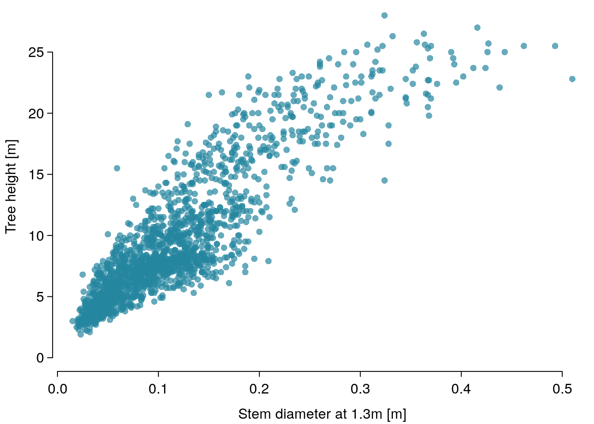
2.3 Example plot(..., type = "l")
par(mar = c(3, 3, 0, 0) + .1, mgp = c(2, .5, 0), tcl = -.3, las = 1)
paint <- colorspace::divergingx_hcl(n = 3, pal = "Earth")[3]
plot(dd$b_mean/100, dd$h_mean, type = "l", col = paint, # rgb(0, 0.38, 0.27),
bty = "n", las = 1, xlab = "Center of dbh class [m]",
ylab = "Arith. mean tree height [m]", xlim = c(0, max(dd$b_mean/100)))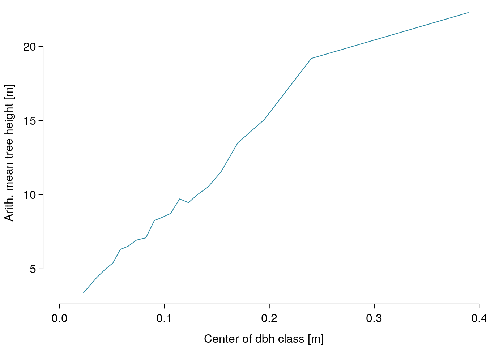
2.4 Example plot(..., type = "b")
par(mar = c(3, 3, 0, 0) + .1, mgp = c(2, .5, 0), tcl = -.3, las = 1)
paint <- colorspace::divergingx_hcl(n = 3, pal = "Earth")[3]
plot(dd$b_mean/100, dd$h_mean, type = "b", pch = 16, col = paint,
bty = "l", las = 1, xlab = "Stem diameter at 1.3m [m]", ylab = "Tree height [m]")
2.5 Example plot(..., type = "o")
par(mar = c(3, 3, 0, 0) + .1, mgp = c(2, .5, 0), tcl = -.3, las = 1)
paint <- colorspace::divergingx_hcl(n = 3, pal = "Earth")[3]
plot(dd$b_mean/100, dd$h_mean, type = "o", pch = 16, col = paint,
bty = "l", las = 1, xlab = "Stem diameter at 1.3m [m]", ylab = "Tree height [m]")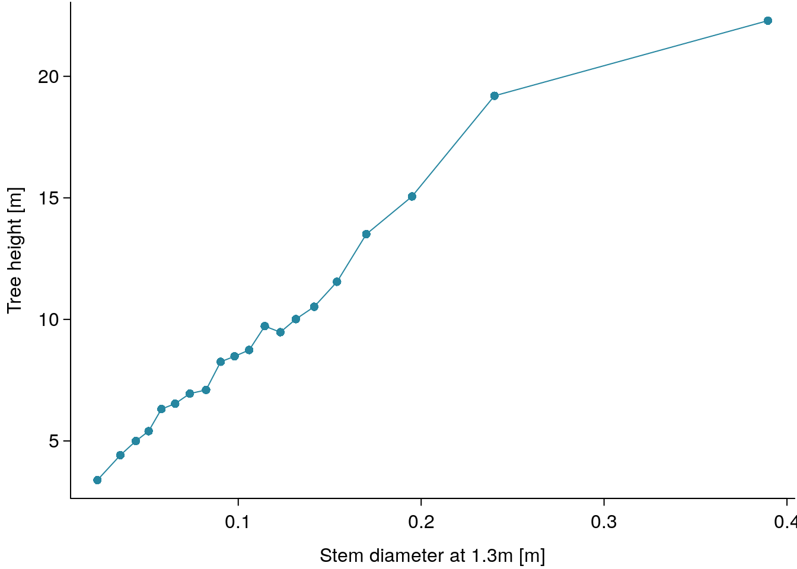
3 Graphic-‘modules’
The remaining examples for type = "n" and type = "s" follow in next examples …
First: Functions that help us add something to a graphic
| Function | Plot element |
|---|---|
axis () |
Adds an axis |
lines () |
Adds a line between points |
points () |
Adds points |
curve () |
Connects points with a smooth curve |
abline () |
Adds a straight line (horizontal, vertical, slope and y-intercept) |
grid () |
Adds a grid (defined by tickmarks) |
legend () |
Adds a legend (example on the next slide) |
polygon () |
Adds a filled polygon |
text () |
Adds text |
mtext () |
Adds text in the plot margins |
3.1 Example lines()
par(mar = c(3, 3, 0, 0) + .1, mgp = c(2, .5, 0), tcl = -.3, las = 1)
paint <- colorspace::divergingx_hcl(n = 3, pal = "Earth", alpha = .5)[3]
plot(df$d/100, df$h, type = "p", pch = 16, col = paint,
bty = "n", las = 1, xlab = "Stem diameter at 1.3m [m]", ylab = "Tree height [m]")
lines(dd$b_mean/100, dd$h_mean, lwd = 2)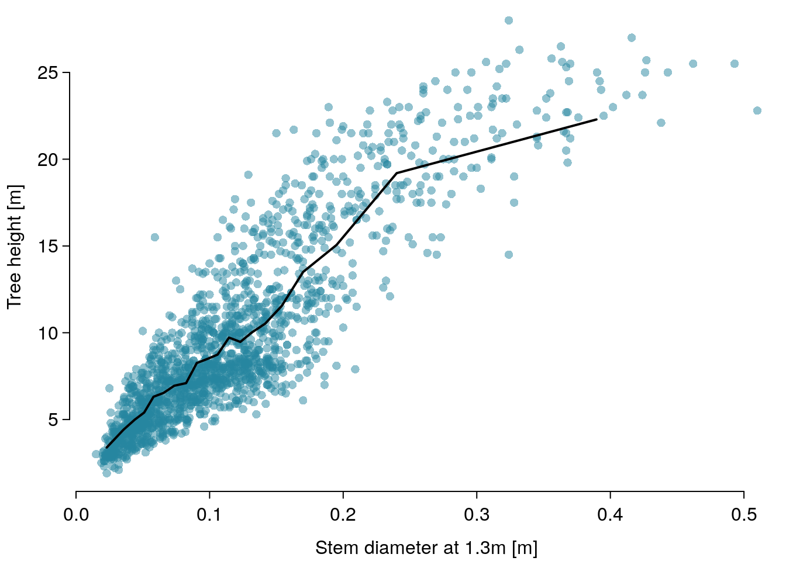
3.2 Example plot(..., type = "n"), grid() and points()
par(mar = c(3, 3, 0, 0) + .1, mgp = c(2, .5, 0), tcl = -.3, las = 1)
paint <- colorspace::divergingx_hcl(n = 3, pal = "Earth", alpha = .5)[3]
plot(df$d/100, df$h, type = "n", bty = "l", las = 1,
xlab = "Stem diameter at 1.3m [m]", ylab = "Tree height [m]")
grid(col = 1)
points(df$d/100, df$h, pch = 16, col = paint)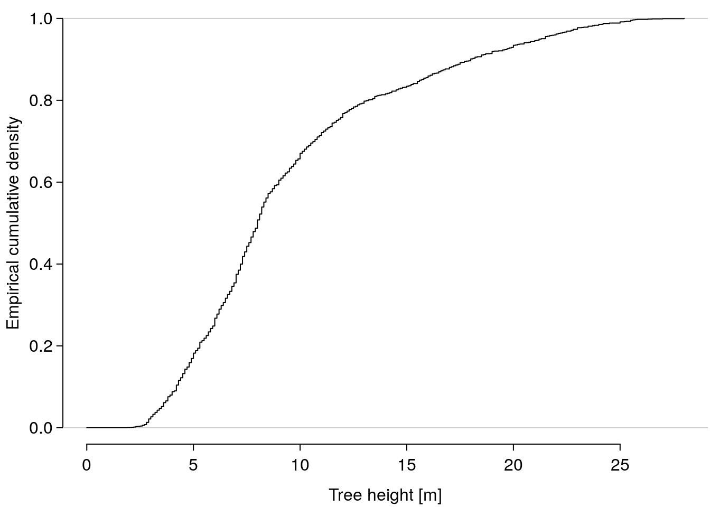
3.3 Example lines(), abline() and lines(..., type = "s")
par(mar = c(3, 3, 0, 0) + .1, mgp = c(2, .5, 0), tcl = -.3, las = 1)
paint <- colorspace::divergingx_hcl(n = 3, pal = "Earth")[3]
tmp <- table(df$h)
tmp1 <- as.numeric(names(tmp))
tmp2 <- as.numeric(tmp)
plot(c(0, tmp1), c(0, cumsum(tmp2)/length(df$h)), type = "n", las = 1, bty = "n",
ylab = "Empirical cumulative density", xlab = "Tree height [m]", col = paint)
abline(h = c(0, 1), col = rgb(0.8, 0.8, 0.8))
lines(c(0, tmp1), c(0, cumsum(tmp2)/length(df$h)), type = "s")3.4 Example polygon()
par(mar = c(3, 3, 0, 0) + .1, mgp = c(2, .5, 0), tcl = -.3, las = 1)
paint <- colorspace::divergingx_hcl(n = 3, pal = "Earth")[3]
paint_a <- colorspace::divergingx_hcl(n = 3, pal = "Earth", alpha = .5)[3]
plot(df$d/100, df$h, type = "n", bty = "n", las = 1, xlab = "Stem diameter at 1.3m [m]",
ylab = "Tree height [m]")
polygon(c(dd$b_mean/100, rev(dd$b_mean/100)), c(dd$h_q25, rev(dd$h_q75)),
col = paint_a, border = NA)
points(df$d/100, df$h, pch = 16, cex = 0.1, col = rgb(0.2, 0.2, 0.2))
lines(dd$b_mean/100, dd$h_mean, col = paint, lwd = 1)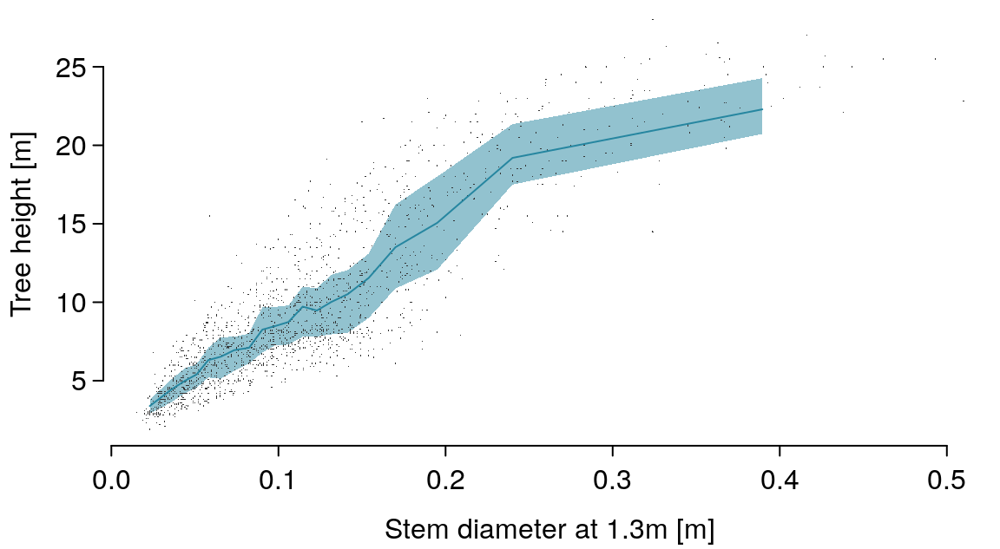
4 legend()
- Adds explanation for plot elements.
- Position either by
x- andy-coordinates, or by specifying"topleft","bottomleft","topright"or"bottomright" - Optional with boundary box.
- Argument
legend: vector with explanations. - Further arguments define colors, plot symbols, line widths, …
4.1 Example legend()
par(mar = c(3, 3, 0, 0) + .1, mgp = c(2, .5, 0), tcl = -.3, las = 1)
paint <- colorspace::divergingx_hcl(n = 3, pal = "Earth", alpha = .5)[3]
plot(df$d/100, df$h, pch = 16, bty = "n", las = 1, ylab = "Tree height [m]",
col = paint, xlab = "Stem diameter at 1.3m [m]")
lines(dd$b_mean/100, dd$h_mean, col = 1, lwd = 2)
legend("bottomright", lwd = 2, lty = c(NA, 1), pch = c(16, NA), bty = "n",
col = c(paint, rgb(0, 0, 0)),
c("Obs.", "Arithm. mean"))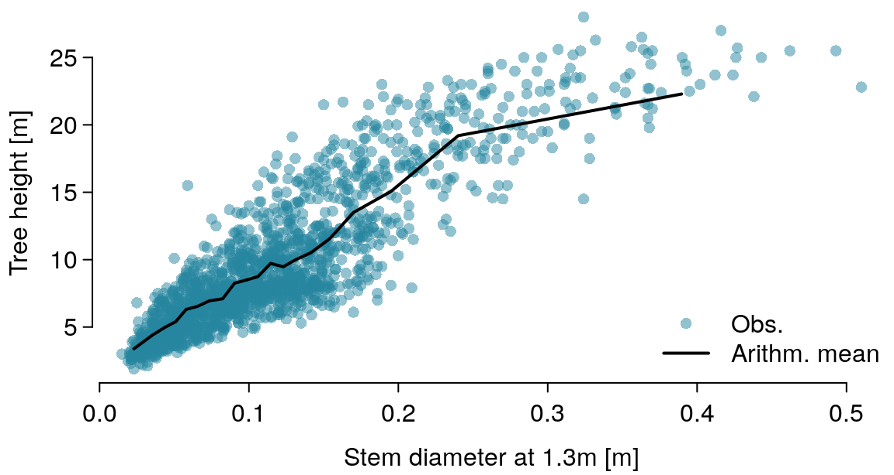
5 Further plot types
5.1 boxplot()
A box plot shows:
- The median as a thick horizontal line,
- the first (\(Q_1\)) and third quartile (\(Q_3\)) as upper and lower box limits,
- ‘fences’ calculated by: \[ \text{upper fence limit} = \min\left(\max(x),Q_3+1.5\cdot\text{IQA}\right), \] other \[ \text {lower fence edge} = \max\left(\min(x),Q_1-1.5\cdot\text{IQA}\right), \] with interquartile range \(\text{IQA} = \vert Q_3-Q_1 \vert\), as well as
- Points outside the fences.
Use with argument x as a variable or formula:
boxplot(x, ..., varwidth = F, names, border = par("fg"), col = NULL, log = "",
horizontal = F, add = F)5.1.1 Examples
par(mar = c(3, 3, 0, 0) + .1, mgp = c(2, .5, 0), tcl = -.3, las = 1)
paint <- colorspace::divergingx_hcl(n = 3, pal = "Earth")[2]
boxplot(df$h, ylab = "Tree height [m]", pch = 16, frame = F, las = 1,
col = paint)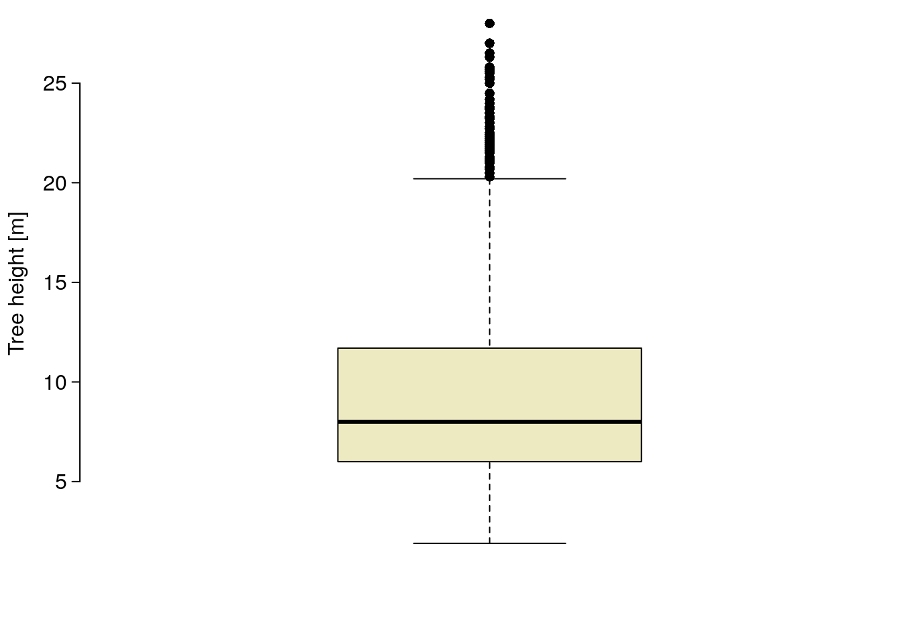
par(mar = c(3, 3, 0, 0) + .1, mgp = c(2, .5, 0), tcl = -.3, las = 1)
paint <- colorspace::divergingx_hcl(n = length(levels(df$d_cut)), pal = "Earth")
tmp <- levels(df$d_cut)
par(mar = c(6.2, 4.1, 0, 0))
boxplot(h ~ d_cut, data = df, varwidth = T, names = tmp, frame = F, las = 2,
ylab = "Tree height [m]", xlab = "",
col = paint)## rgb(0, 0.38, 0.27, alpha = 0.5))
mtext(1, text = "Stem diameter at 1.3m [m]", line = 5.1)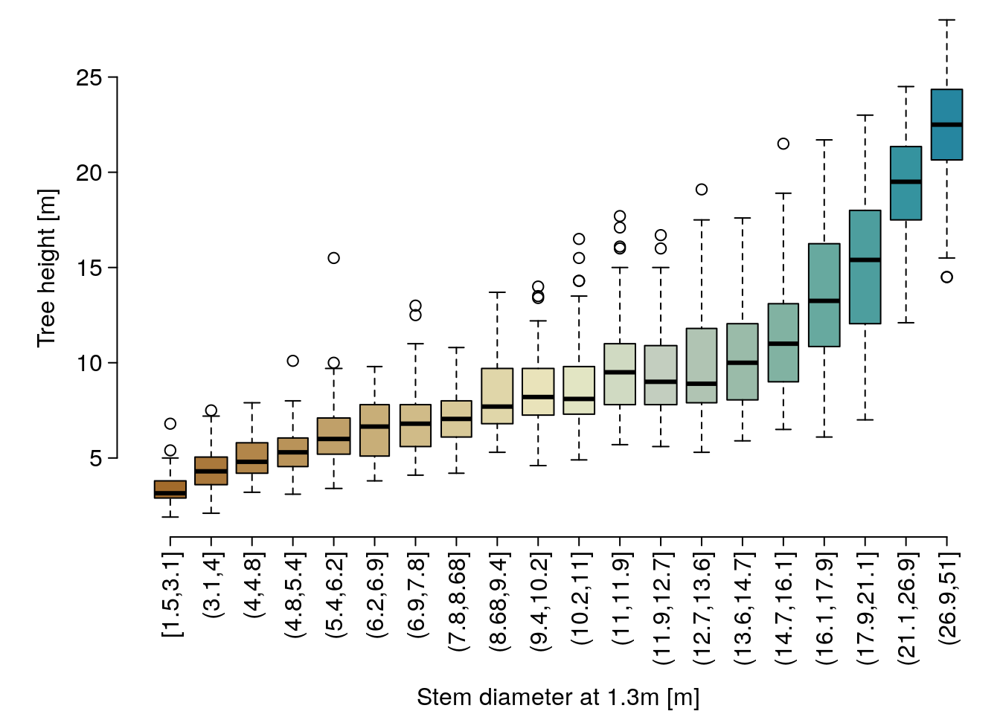
5.2 stripchart()
stripcharts can be helpful additions to box plots, especially with small samples:
“stripchart produces one dimensional scatter plots […] of the given data. These plots are a good alternative to boxplots when sample sizes are small.” (Quote taken from ?stripchart)
- The argument
methodspecifies by which method superimposed points should be made distinguishable, in particularmethod = "jitter"ormethod = "stack".
5.2.1 Example
par(mar = c(3, 3, 0, 0) + .1, mgp = c(2, .5, 0), tcl = -.3, las = 1)
paint <- colorspace::divergingx_hcl(n = 3, pal = "Earth")[2]
tmp <- levels(df$d_cut)
sdf <- subset(df, d_cut == "(26.9,51]")
boxplot(sdf$h, ylab = "Tree height [m]", cex = 0, frame = F, las = 1,
col = paint)
stripchart(sdf$h, add = T, vertical = T, pch = 16, method = "jitter",
jitter = 0.2)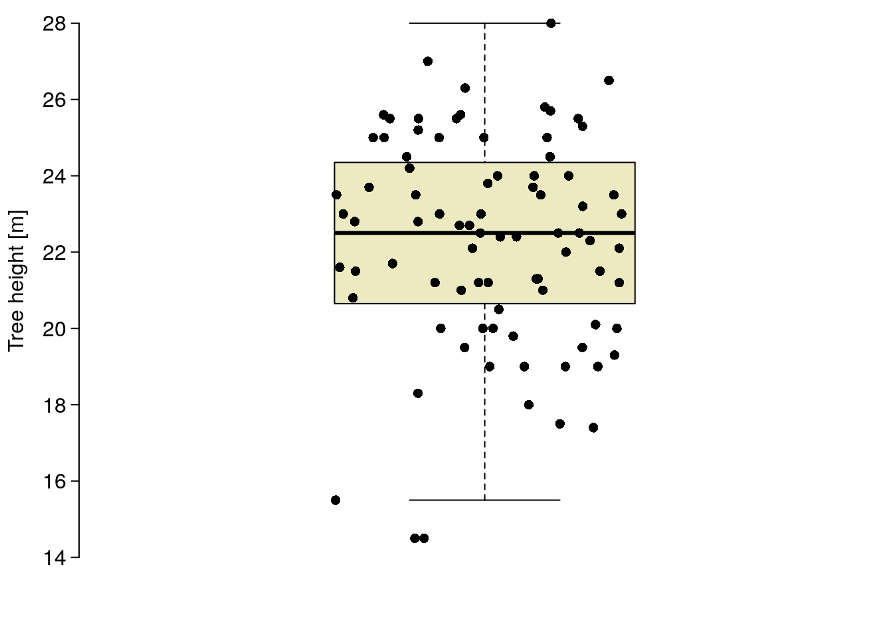
5.3 hist()
A histogram divides the value range of the sample into (preset equidistant) intervals and then shows the absolute frequency of the observations within these intervals through the heights of areas. The histogram thus provides a rough estimate for the probability density function.
- The argument
breaksdefines the values of the interval limits or the number of intervals.
Usage:
5.4 density()
density ()provides a continuous estimate of the probability density function.- A kernel function is defined at each observation point, the weights of these functions are estimated, and the sum of the kernel functions multiplied by the weights is then returned at each point as an estimator.
- Overlapping a kernel function with areas for which the underlying size is not defined, positive density estimates can arise as artifacts that would be correctly equal to \(0\).
density ()only returns information about the calculated estimate, the plot then works separately.- A kernel density estimate is a statistical model with a few assumptions, but pretends to be just a simple descriptive graphic.
Usage:
5.4.1 Example hist() and density()
par(mar = c(3.5, 3.5, 0, 0) + .1, mgp = c(2.5, .5, 0), tcl = -.3, las = 1)
paint <- colorspace::divergingx_hcl(n = 3, pal = "Earth")[2]
tmp1 <- density(df$h); tmp2 <- hist(df$h, plot = F)
x_lim <- range(c(df$h, tmp1$x)); y_lim <- range(c(tmp1$y, tmp2$density))
hist(df$h, main = "", las = 1, freq = F, xlim = x_lim, ylim = y_lim,
xlab = "Tree height [m]", ylab = "Probability density",
col = paint, border = NA)
lines(tmp1$x, tmp1$y, lwd = 2)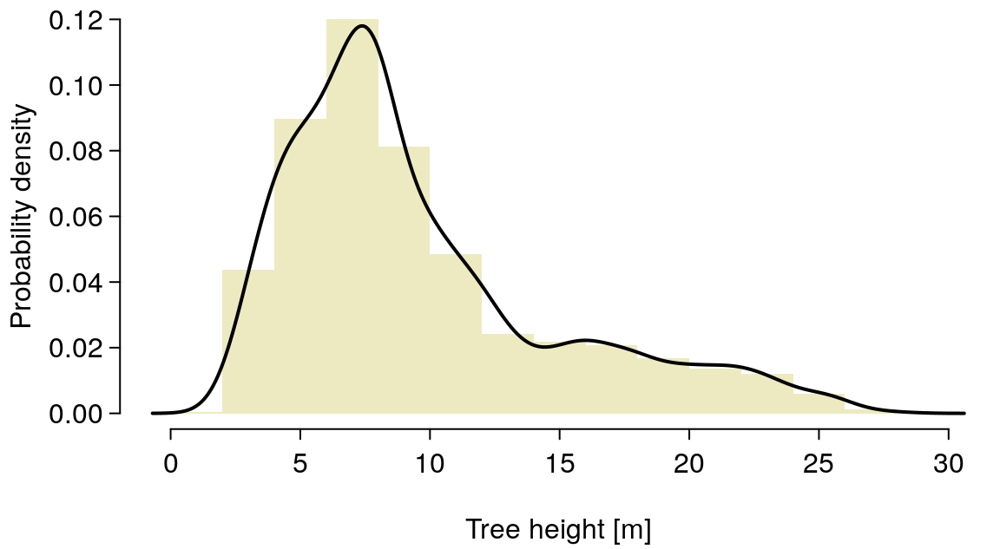
5.5 contour() und filled.contour()
Three-dimensional information can be represented by contour lines with contour().
Some preliminary work for the examples on the next two slides:
mu_seq <- seq(5, 15, length = 100)
sd_seq <- seq(3, 8, length = 100)
gr <- expand.grid(mu_seq, sd_seq)
z <- apply(gr, MAR = 1,
FUN = function(x, y){
mean(dnorm(x = y, mean = x[1], sd = x[2], log = T))},
y = df$h)
z <- matrix(nrow = length(mu_seq), ncol = length(sd_seq), z)
# library("RColorBrewer")
# library("scales")
# nwfva_palette_1 <- gradient_n_pal(c("#7C4113","#90BD88","#004E92"))(seq(0, 1,le = 50))5.5.1 Example contour()
par(mar = c(3, 3, 0, 0) + .1, mgp = c(2, .5, 0), tcl = -.3, las = 1)
paint <- colorspace::divergingx_hcl(n = 3, pal = "Earth")[3]
contour(x = mu_seq, y = sd_seq^2, z = z, las = 1, bty = "n",
xlab = expression(paste(mu)), ylab = expression(paste(sigma^2)),
col = paint, lwd = 2)
points(mean(df$h), var(df$h), pch = 16)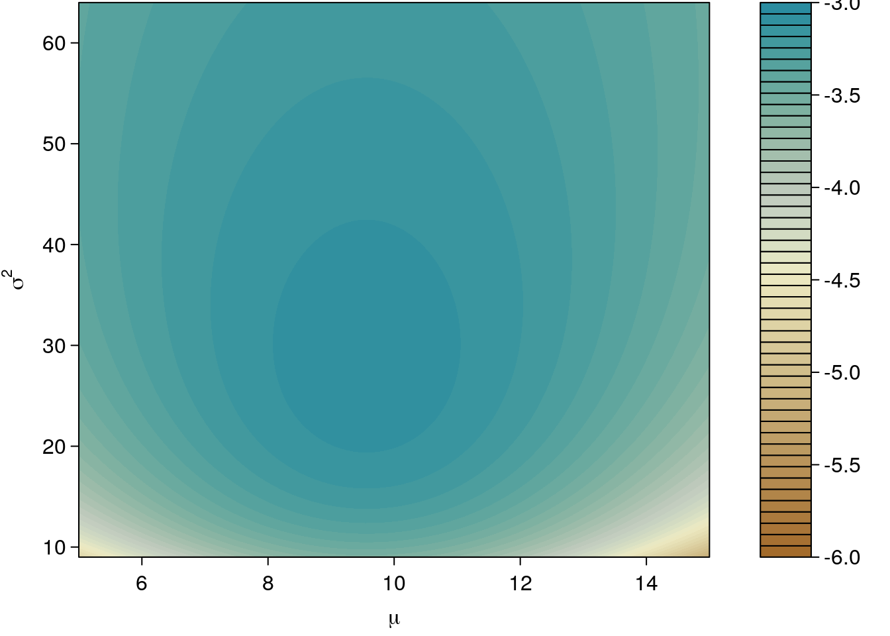
5.5.2 Example filled.contour()
par(mar = c(3, 3, 0, 0) + .1, mgp = c(2, .5, 0), tcl = -.3, las = 1)
paint <- colorspace::divergingx_hcl(n = 50, pal = "Earth")
filled.contour(x = mu_seq, y = sd_seq^2, z = z, col = paint,
levels = seq(floor(min(z)), ceiling(max(z)), length = 50), las = 1,
xlab = expression(paste(mu)), ylab = expression(paste(sigma^2)))5.6 mosaicplot()
Two-dimensional frequency tables can be displayed with mosaicplot().
Some preliminary work for the following example:
df$h_cut <- cut(df$h, breaks = quantile(df$h, probs = seq(0, 1, by = 0.05)),
include.lowest = T)
df$h_cut <- factor(df$h_cut, levels = rev(levels(df$h_cut)))
tab <- table(df$d_cut, df$h_cut)5.6.1 Example
par(mar = c(5, 5, 0, 0) + .1, mgp = c(2, .5, 0), tcl = -.3, las = 1)
paint <- colorspace::divergingx_hcl(n = length(levels(df$h_cut)), pal = "Earth")
mosaicplot(tab, xlab = "Stem diameter at 1.3m [m]", ylab = "Tree height [m]", main = "",
las = 2, col = paint, off = 2, border = NA)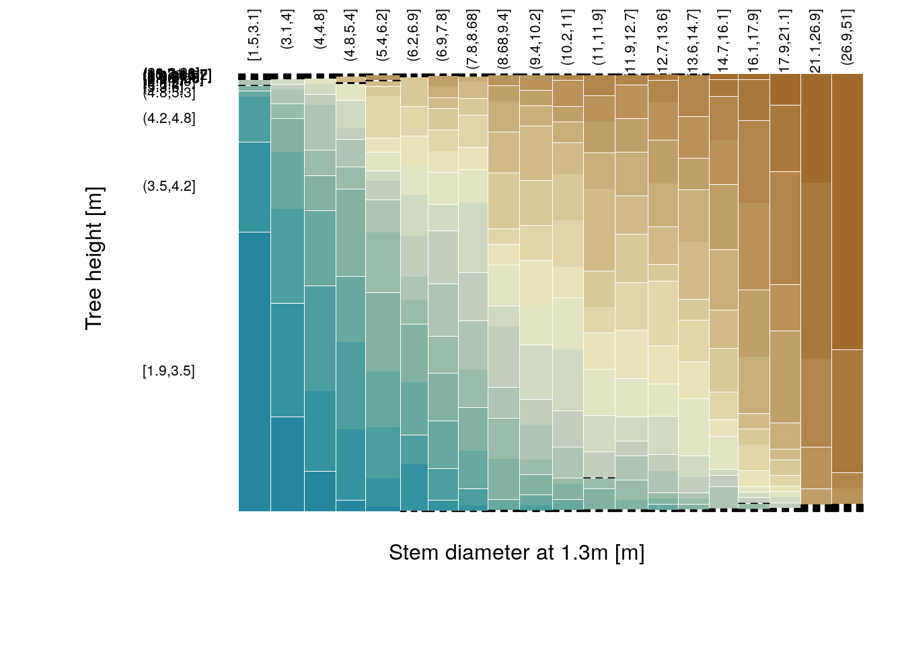
5.7 Quantile-quantile plot
- Compares two samples (one sample and one distribution) by their quantiles.
- Each observation defines a quantile.
- Similar distributions should result in straight diagonal.
6 Organization of the graphics window with par () and layout ()
- The function
par()holds – based on a list – all relevant parameters for the graphics window. - Overview through
?par dev.off()restores the original values.
The following combination (‘multiple frames’ and changing the ‘margin specifications’) is often used:
layout() is a further helpful too in order to organise severel graphics in one device.
6.1 Example layout()
par(mar = c(3, 3, 0, 0) + .1, mgp = c(2, .5, 0), tcl = -.3, las = 1)
paint <- colorspace::divergingx_hcl(n = 3, pal = "Earth")[3]
paint_a <- colorspace::divergingx_hcl(n = 3, pal = "Earth", alpha = .5)[3]
#par(mar = c(4.1, 4.1, 0.5, 1.1))
layout(matrix(nrow = 2, ncol = 2, c(1, 3, 2, 3)), heights = c(0.4, 0.6))
hist(df$d/100, main = "", xlab = "Stem diameter at 1.3m [m]", ylab = "Abs. frequency",
col = paint_a, border = paint)
hist(df$h, xlab = "Tree height [m]", main = "", ylab = "Abs. frequency",
col = paint_a, border = paint)
plot(df$d/100, df$h, pch = 16, bty = "l", col = paint_a,
xlab = "Stem diameter at 1.3m [m]", ylab = "Tree height [m]")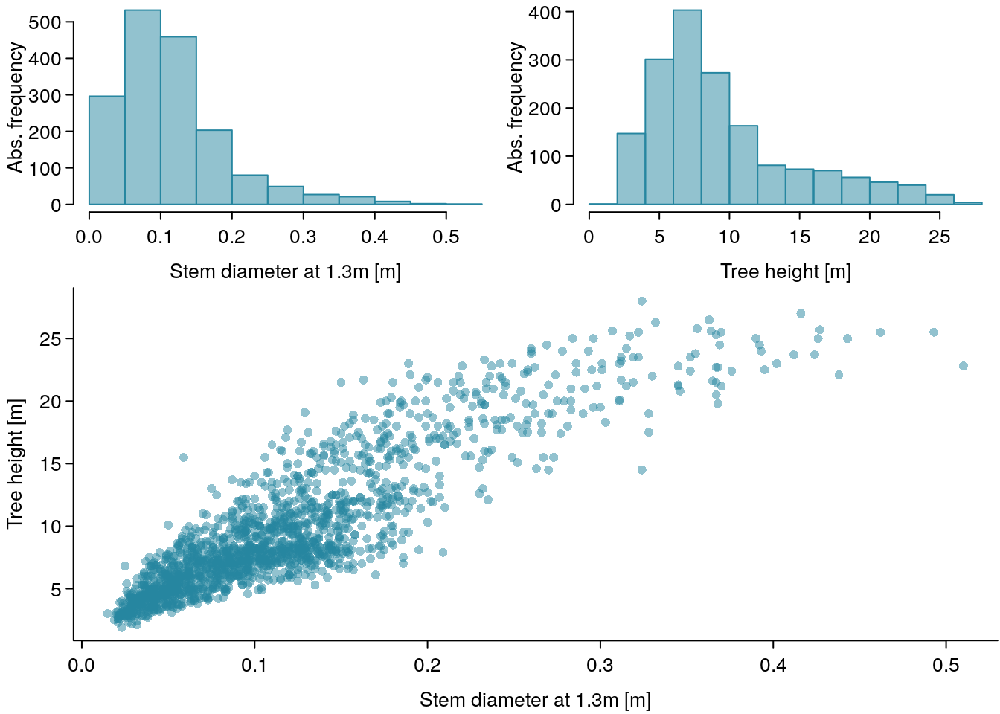
7 Colours
- Colors are changed by the argument
col = "name". - The function
colors ()contains already defined standard colors. - The function
palette ()contains the color palette that is used whencolis specified by a numeric value. rgbgenerates colors by mixing red, green and blue components (with the possibility of alpha shading} through the argumentalpha).- In this course I mostly use the (very rich) package
colorspace([JSS article] (https://www.jstatsoft.org/index.php/jss/article/view/v096i01/1395)). - Alternatively, package
viridissupports the search for optimal colors in terms of taking into account most types of color blindness, as well as the maximum contrast in gray-scale printing of colored graphics.
7.1 Example viridis()
library("viridis")
df$dmean_rounded <- round(df$dmean)
cols <- viridis(n = 1 + max(df$dmean_rounded) - min(df$dmean_rounded), alpha = 0.7)
cols <- rev(cols)
layout(widths = c(0.9, 0.1), mat = matrix(nrow = 1, ncol = 2, 1:2))
par(mar = c(5, 5, 1, 1))
plot(df$d/100, df$h, pch = 16, bty = "n", las = 1,
xlab = "Stem diameter at 1.3m [m]", ylab = "Tree height [m]",
col = cols[as.numeric(as.factor(df$dmean_rounded))])
par(mar = c(6, 0, 2, 2))
plot(rep(0, length(cols)), 1:length(cols), type = "n", main = "",
bty = "n", xlab = "", ylab = "", yaxt = "n", xaxt = "n")
axis(4, las = 2, at = c(0, 20, 40, 60, 80, 100),
seq(min(df$dmean_rounded), max(df$dmean_rounded), length = 6))
for (i in 1:length(cols)) {
polygon(c(-1, -1, 1, 1), i + c(-0.5, 0.5, 0.5, -0.5), border = NA,
col = cols[i])
}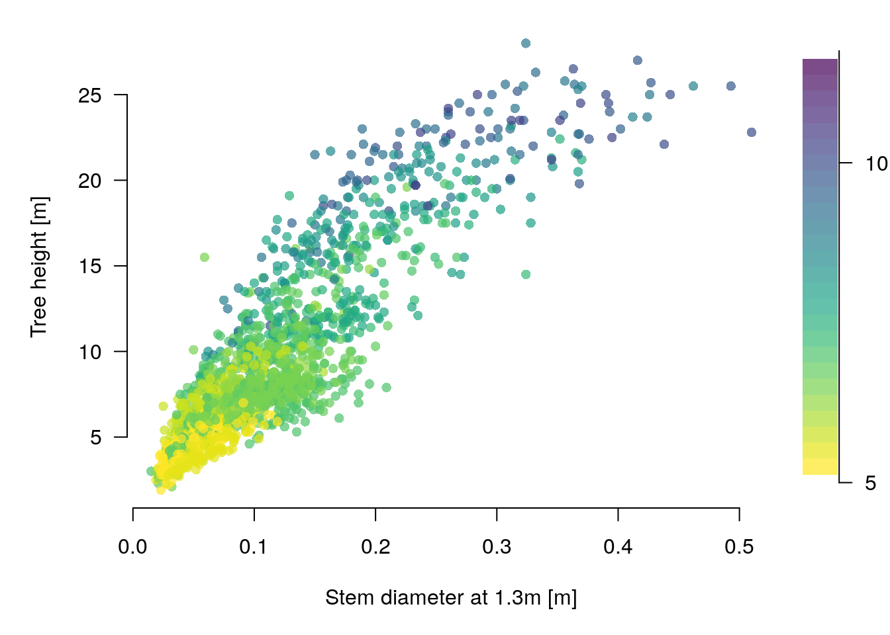
8 Mathematical notation in graphics
- R offers limited possibilities for mathematical notation in graphics.
- Syntax similar to LaTeX
- The formulation is passed as an argument to the
expression()function. - For an overview of the (im) possibilities see
?plotmath
| Command | Meaning |
|---|---|
frac(a,b) |
Fraction |
[i] |
Subscript |
alpha, beta |
Greek letters |
sqrt(a) |
Squarerootfunction |
| … | See ?plotmath |
8.1 Example
plot(1, 1, type = "n", bty = "n", axes = F, xlab = "", ylab = "")
txt1 <- expression(paste("Stand density: ", frac("No. individuals",
"Stand area"), " [", N %.% ha^-1, "]"))
txt2 <- expression(paste("Quadratic mean Stem diameter: ", sqrt(frac(
sum(d[i]^2, i == 1, n),n)), " [", cm^2, "]"))
text(1, 1.2, txt1); text(1, 0.9, txt2)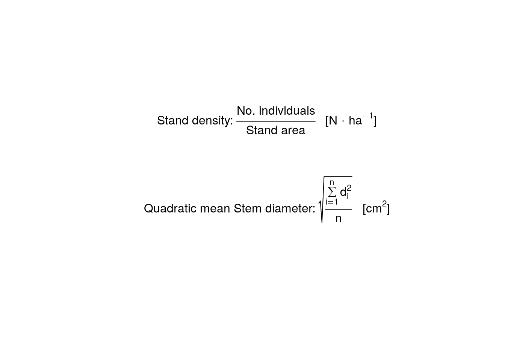
9 lattice Graphics for grouped / clustered data
library("lattice")- Conveniently plot grouped data into a graph
- ‘Lattice structure’ offers better division compared to
par(mfrow = c(i, j))
| Function | Graphic type |
|---|---|
xyplot |
Scatter plot |
bwplot |
Box plot |
barchart |
Bar plot |
contourplot |
Contour lines (‘3D’) |
levelplot |
Filled contour lines |
histogram |
Histogram |
densityplot |
kernel density estimation |
Usage:
- Plot of
xagainsty, - Grouped (individual plot windows) by
g, - Returns
trellisobject (nobaseplot), - no ‘target variable’
yfordensityplot,bwplotandhistogram.
9.1 Example:
library("lattice")
df$plot <- factor(df$plot)
paint <- colorspace::divergingx_hcl(n = 3, pal = "Earth")[3]
paint_a <- colorspace::divergingx_hcl(n = 3, pal = "Earth", alpha = .5)[3]
xyplot(h ~ d/100 | plot, data = df, pch = 16, xlab = "Stem diameter at 1.3m [m]",
ylab = "Tree height [m]", col = paint_a,
par.strip.text = list(col = "white"),
par.settings = list(strip.background = list(col = paint)))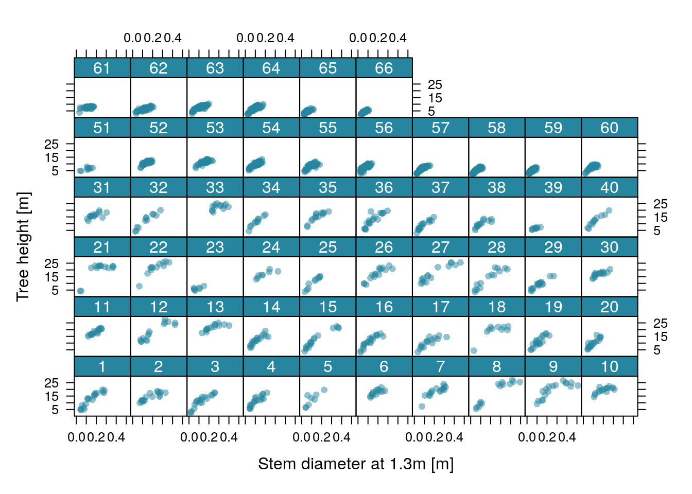
10 ggplot
The basics to Grammar of Graphics in Session 05.
References
Private webpage: uncertaintree.github.io↩